To print a listing of all examples of a chapter, use ch18().
To run all the examples of ch18(), use example(ch18).
Examples
# Chapter 18 - Looking At ggplot2 Graphics
# Installing and Loading ggplot2
if (FALSE) {
install.packages("ggplot2")
}
library("ggplot2")
# Looking At Layers
ggplot(faithful, aes(x=eruptions, y=waiting)) + geom_point() + stat_smooth()
#> `geom_smooth()` using method = 'loess' and formula 'y ~ x'
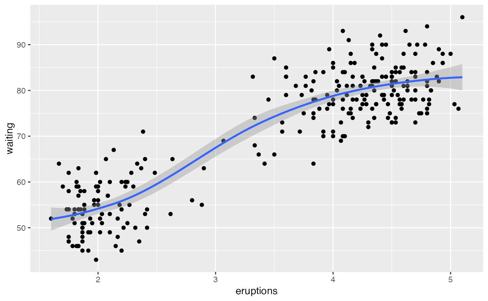
# Using Geoms and Stats
## Defining what data to use
## Mapping data to plot aesthetics
ggplot(faithful, aes(x=eruptions, y=waiting)) + geom_point() + stat_smooth()
#> `geom_smooth()` using method = 'loess' and formula 'y ~ x'
## Getting geoms
### Creating a bar chart
ggplot(quakes, aes(x=depth)) + geom_bar()
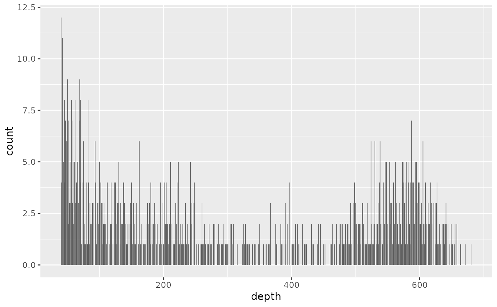
ggplot(quakes, aes(x=depth)) + geom_histogram(binwidth=50)
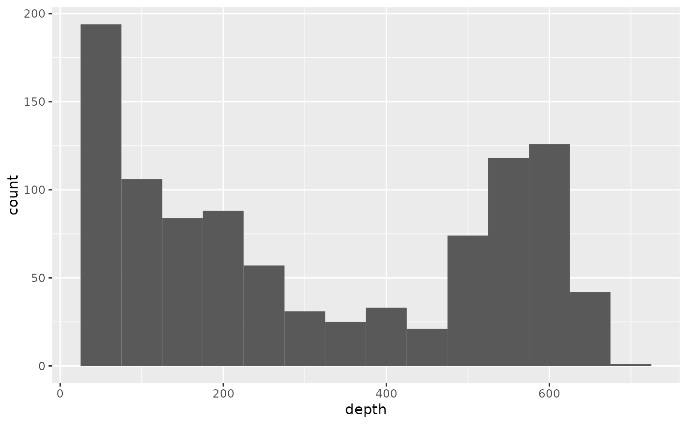
quakes.agg <- aggregate(mag ~ round(depth, -1), data=quakes, FUN=length)
names(quakes.agg) <- c("depth", "mag")
ggplot(quakes.agg, aes(x=depth, y=mag)) +
geom_bar(stat="identity")
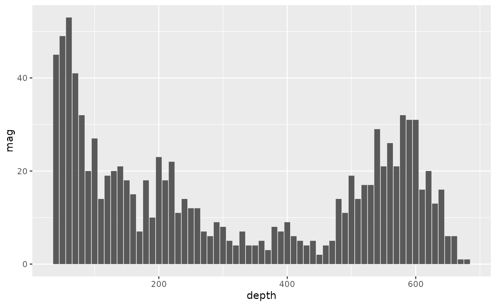
### Making a scatterplot
ggplot(quakes, aes(x=long, y=lat)) + geom_point()
### Creating line charts
ggplot(longley, aes(x=Year, y=Unemployed)) + geom_line()
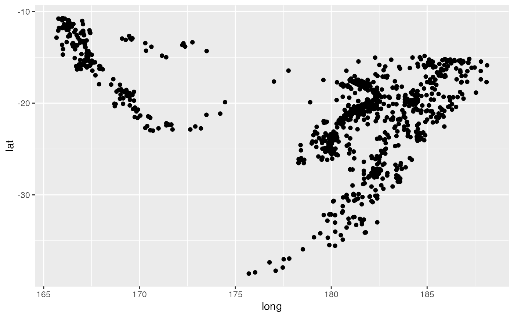
# Sussing Stats
## Binning data
ggplot(quakes, aes(x=depth)) + geom_bar()
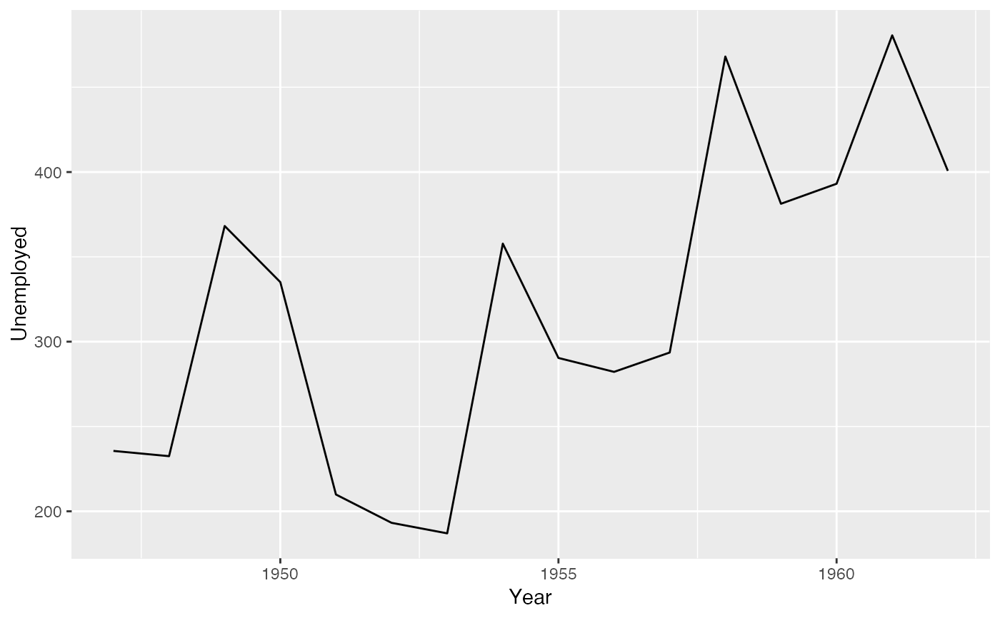
ggplot(quakes, aes(x=depth)) + stat_bin(binwidth = 50)
## Smoothing data
ggplot(longley, aes(x=Year, y=Employed)) + geom_point()
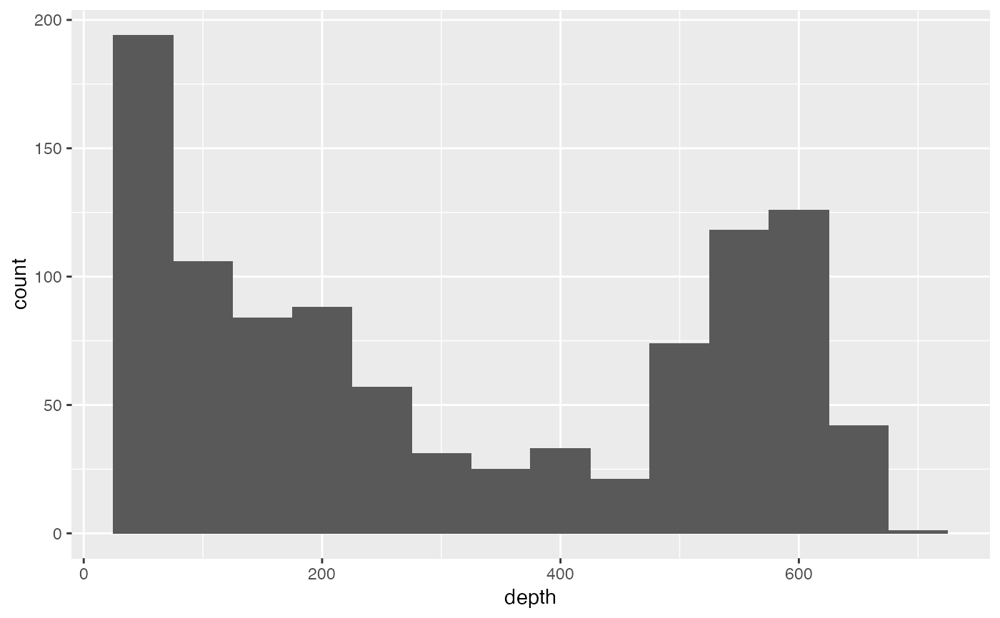
ggplot(longley, aes(x=Year, y=Employed)) +
geom_point() + stat_smooth()
#> `geom_smooth()` using method = 'loess' and formula 'y ~ x'
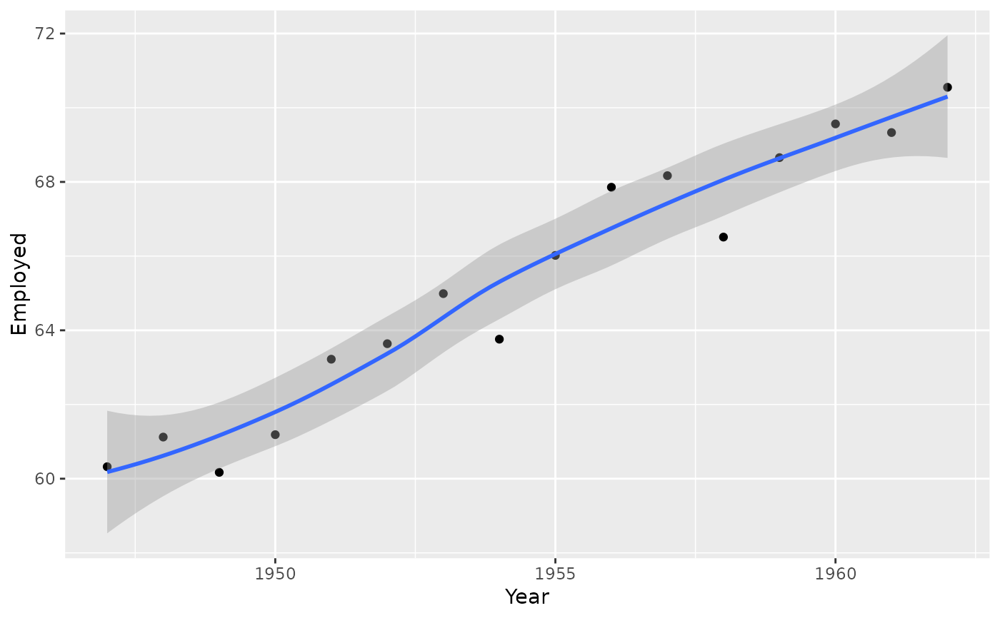
ggplot(longley, aes(x=Year, y=Employed)) +
geom_point() + stat_smooth(method="lm")
#> `geom_smooth()` using formula 'y ~ x'
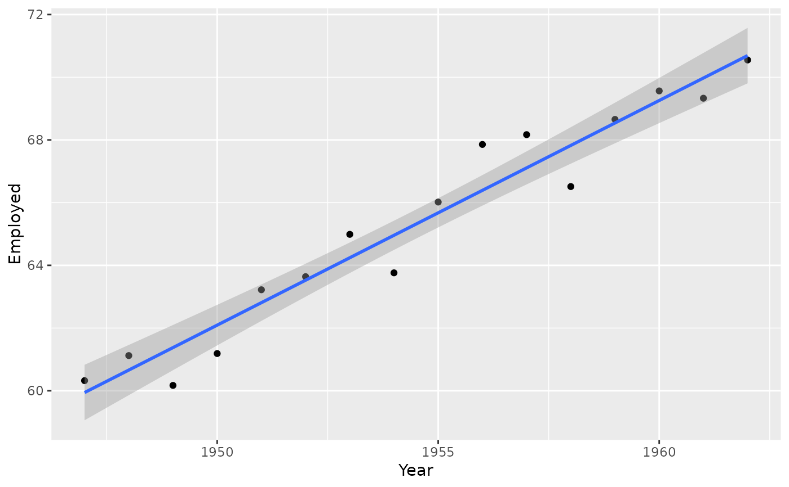
# Adding Facets, Scales, and Options
## Adding facets
ggplot(mtcars, aes(x=hp, y=mpg)) + geom_point()
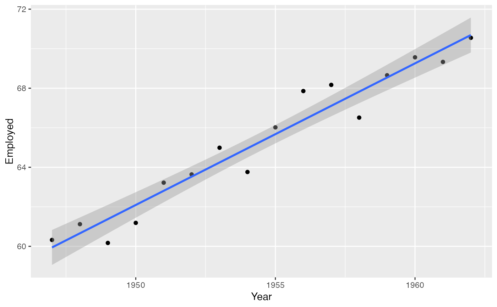
ggplot(mtcars, aes(x=hp, y=mpg)) + geom_point() +
stat_smooth(method="lm") + facet_grid(~cyl)
#> `geom_smooth()` using formula 'y ~ x'
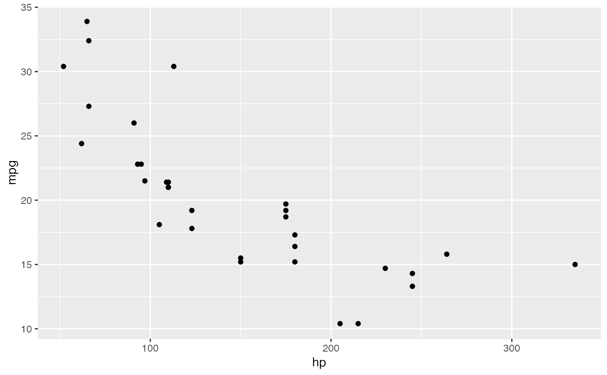
ggplot(mtcars, aes(x=hp, y=mpg)) +
geom_point(aes(shape=factor(cyl), colour=factor(cyl)))
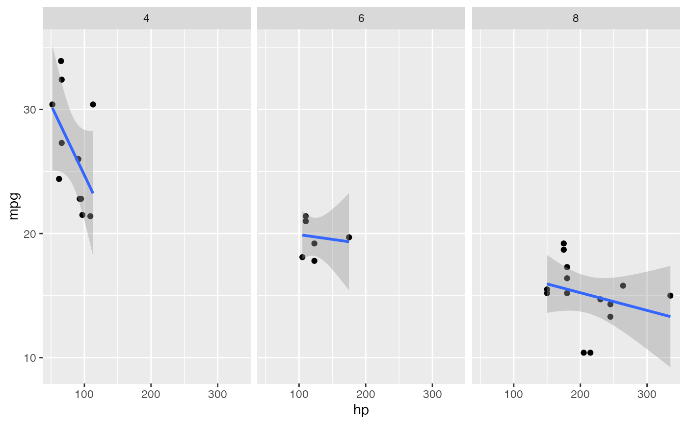
ggplot(mtcars, aes(x=hp, y=mpg)) +
geom_point(aes(shape=factor(cyl), colour=factor(cyl))) +
scale_shape_discrete(name="Cylinders") +
scale_colour_discrete(name="Cylinders")
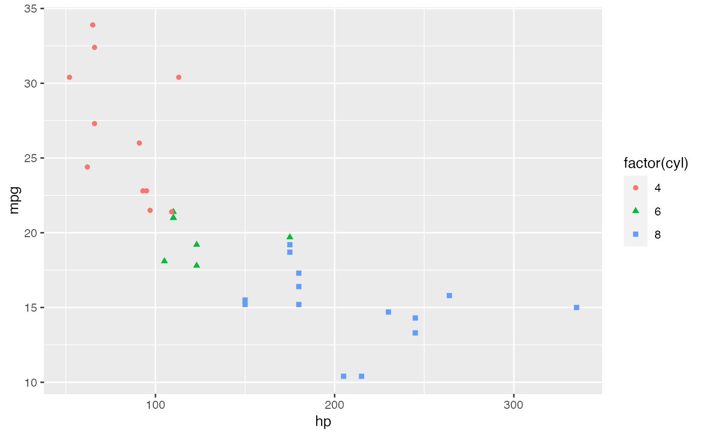
## Changing options
ggplot(mtcars, aes(x=hp, y=mpg)) + geom_point(color="red") +
xlab("Performance (horse power") +
ylab("Fuel consumption (mpg)") +
ggtitle("Motor car comparison")
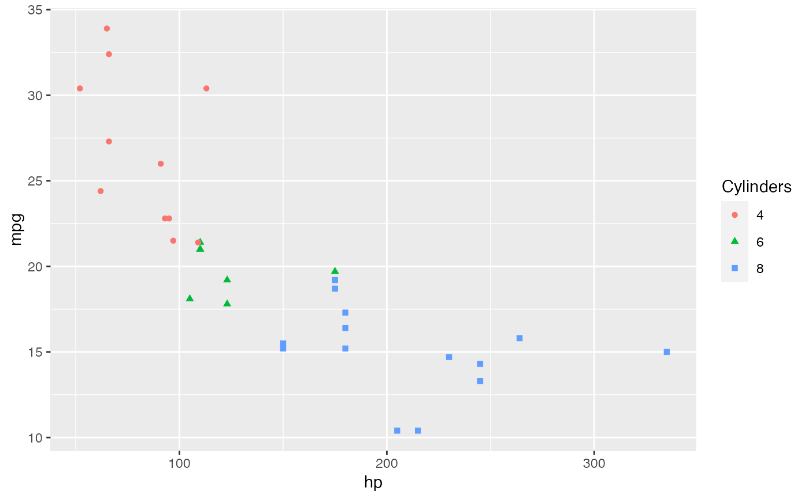